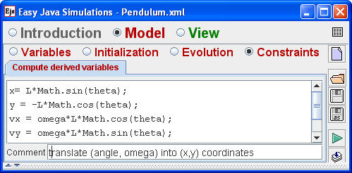
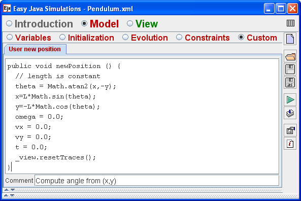

The Pendulum model uses polar coordinates to compute the displacement angle θ but the pendulum bob in the simulation's view is positioned using Cartesian coordinates. We create x and y auxiliary variables to synchronize objects in the view with the model. These Cartesian coordinates are computed from the displacement angle when they are defined and after every animation step using an Ejs Constraints page.

Because mouse actions are enabled on the bob's properties page and because the model's x and y variables are bound to the bob's x and y properties, the model's x and y variables change when the bob is dragged. This binding of on-screen properties to a model's internal variables encourages us to define a custom method newPosition that computes the displacement angle θ from the bob's Cartesian coordinates. The newPosition method also sets the bob's velocity components to zero and insures that the final coordinates are the correct distance L from the pivot point. The newPosition method is called in response to a mouse drag by entering the method name as the drag action in the bob's properties page.